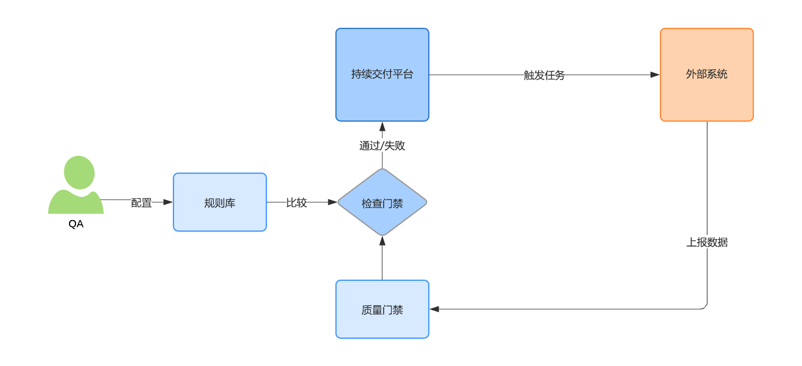
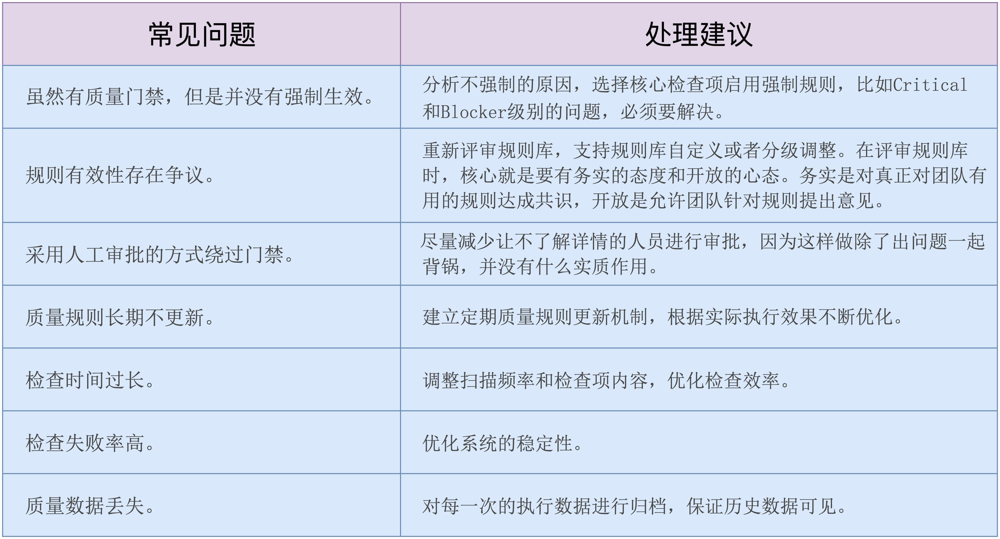

- 00 开篇词 从默默无闻到风靡全球，DevOps究竟有什么魔力？.md.html
- 01 DevOps的“定义”：DevOps究竟要解决什么问题？.md.html
- 02 DevOps的价值：数字化转型时代，DevOps是必选项？.md.html
- 03 DevOps的实施：到底是工具先行还是文化先行？.md.html
- 04 DevOps的衡量：你是否找到了DevOps的实施路线图？.md.html
- 05 价值流分析：关于DevOps转型，我们应该从何处入手？.md.html
- 06 转型之路：企业实施DevOps的常见路径和问题.md.html
- 07 业务敏捷：帮助DevOps快速落地的源动力.md.html
- 08 精益看板（上）：精益驱动的敏捷开发方法.md.html
- 09 精益看板（下）：精益驱动的敏捷开发方法.md.html
- 10 配置管理：最容易被忽视的DevOps工程实践基础.md.html
- 11 分支策略：让研发高效协作的关键要素.md.html
- 12 持续集成：你说的CI和我说的CI是一回事吗？.md.html
- 13 自动化测试：DevOps的阿克琉斯之踵.md.html
- 14 内建质量：丰田和亚马逊给我们的启示.md.html
- 15 技术债务：那些不可忽视的潜在问题.md.html
- 16 环境管理：一切皆代码是一种什么样的体验？.md.html
- 17 部署管理：低风险的部署发布策略.md.html
- 18 混沌工程：软件领域的反脆弱.md.html
- 19 正向度量：如何建立完整的DevOps度量体系？.md.html
- 20 持续改进：PDCA体系和持续改进的意义.md.html
- 21 开源还是自研：企业DevOps平台建设的三个阶段.md.html
- 22 产品设计之道：DevOps产品设计的五个层次.md.html
- 23 持续交付平台：现代流水线必备的十大特征（上）.md.html
- 24 持续交付平台：现代流水线必备的十大特征（下）.md.html
- 25 让数据说话：如何建设企业级数据度量平台？.md.html
- 26 平台产品研发：三个月完成千人规模的产品要怎么做？.md.html
- 27 巨人的肩膀：那些你不能忽视的开源工具.md.html
- 28 迈向云端：云原生应用时代的平台思考.md.html
- 29 向前一步：万人规模企业的DevOps实战转型案例（上）.md.html
- 30 向前一步：万人规模企业的DevOps实战转型案例（下）.md.html
- 期中总结 3个典型问题答疑及如何高效学习 (1).md.html
- 期中总结 3个典型问题答疑及如何高效学习.md.html
- 期末总结 在云时代，如何选择一款合适的流水线工具？.md.html
- 特别放送（一）成为DevOps工程师的必备技能（上）.md.html
- 特别放送（三）学习DevOps不得不了解的经典资料.md.html
- 特别放送（二）成为DevOps工程师的必备技能（下）.md.html
- 特别放送（五）关于DevOps组织和文化的那些趣事儿.md.html
- 特别放送（四）Jenkins产品经理是如何设计产品的？.md.html
- 结束语 持续改进，成就非凡！.md.html
- 捐赠
14 内建质量：丰田和亚马逊给我们的启示
你好，我是石雪峰，今天我来跟你聊一个非常重要的话题：内建质量。
我之前给你讲过一个故事，说的是在美国汽车工厂装配流水线的末端，总是有个人在拿着橡胶锤子敲打车门，以检查车门是否安装良好。我还说，如果一个公司要靠“拿锤子的人”来保证质量，这就说明，这个公司的流程本身可能就有问题。
这个观点并不是我凭空捏造出来的，而是来自于质量管理大师爱德华·戴明博士经典的质量管理14条原则。其中，第3条指出，不应该将质量依赖于检验工作，因为检验工作既昂贵，又不可靠。最重要的是，检验工作并不直接提升产品质量，只是为了证明质量有缺陷。而正确的做法是将质量内建于整个流程之中，并通过有效的控制手段来证明流程自身的有效性。
为什么内建质量如此重要？
在传统的软件开发过程中，检验质量的“锤子”往往都握在测试团队的手中。他们在软件交付的末端，通过一系列的“锤子”来“敲打”软件产品的方方面面，试图找到一些潜在的问题。
这样做的问题是，测试通过尽可能全面的回归测试来验证产品质量符合预期，成本是巨大的，但是效果却不见得有多好。
因为测试只能基于已知的产品设计进行验证，但那些潜在的风险有可能连开发自己都不知道。比如，开发引入了一些第三方的类库，但这些库本身存在缺陷，那么，如果测试没有回归到这个场景，就很有可能出现漏测和生产事故。
另外，由于测试存在的意义在于发现更多的缺陷，有些团队的考核指标甚至直接关联缺陷提交数量，以及缺陷修复数量。那么，这里的前提就是假设产品是存在缺陷的。于是，测试团队为了发现问题而发现问题，在研发后面围追堵截，这也造成了开发和测试之间的隔阂和对立，这显然不是DevOps所倡导的状态。
那么，解决这个问题的正确“姿势”，就是内建质量啦！
关于内建质量，有个经典的案例就是丰田公司的安灯系统，也叫作安灯拉绳。丰田的汽车生产线上方有一条绳子，如果生产线上的员工发现了质量问题，就可以拉动安灯系统通知管理人员，并停止生产线，以避免带有缺陷的产品不断流向下游。
要知道，在生产制造业中，生产线恨不得24小时运转，因为这样可以最大化地利用时间，生产更多的产品。可是现在，随随便便一个员工就可以让整条生产线停转，丰田公司是怎么想的呢？
其实，这背后的理念就是“Fail fast”，即快速失败。如果工人发现了有缺陷的产品，却要经过层层审批才能停止生产线，就会有大量带有缺陷的产品流向下游，所以，停止生产线并不是目的，及时发现问题和解决问题才是目的。
当启动安灯系统之后，管理人员、产线质量控制人员等相关人员会立刻聚集到一起解决这个问题，并尽快使生产线重新恢复运转。更重要的是，这些经验会被积累下来，并融入组织的能力之中。
内建质量扭转了看待产品质量的根本视角，也就是说，团队所做的一切不是为了验证产品存在问题，而是为了确保产品没有问题。
几年前，我在华为参加转正答辩的时候，被问到一个问题：“华为的质量观是怎样的？”答案是三个字：“零缺陷。”我当时并不理解，人非圣贤，孰能无过？产品零缺陷简直就是反常理。但是，后来我慢慢明白，所谓零缺陷，并不是说产品的Bug数量等于零，这其实是一种质量观念，倡导全员质量管理，构建质量文化。每一个人在工作的时候，都要力争第一时间发现和解决缺陷。
所以，总结一下，内建质量有两个核心原则：
- 问题发现得越早，修复成本就越低；
- 质量是每个人的责任，而不是质量团队的责任。
说了这么多，你应该已经对内建质量有了初步的认识。那么接下来，我来给你介绍下内建质量的实践思路、操作步骤、常见问题以及应对方法。
内建质量的实施思路
既然是内建质量，那么，我们就应该在软件交付的各个环节中注入质量控制的能力。
在需求环节，可以定义清晰的需求准入规则，比如需求的价值衡量指标是否客观、需求的技术可行性是否经过了验证、需求的依赖是否充分评估、需求描述是否清晰、需求拆分是否合理、需求验收条件是否明确等等。
通过前置需求质量控制，可以减少不靠谱的需求流入。在很多公司，“一句话需求”和“老板需求”是非常典型的例子。由于没有进行充分沟通，研发就跟着感觉走，结果交付出来的东西完全不是想要的，这就带来了返工浪费。
在开发阶段，代码评审和持续集成就是一个非常好的内建质量的实践。在代码评审中，要尽量确认编码是否和需求相匹配，业务逻辑是否清晰。另外，通过一系列的自动化检查机制，来验证编码风格、风险、安全漏洞等。
在测试阶段，可以通过各类自动化测试，以及手工探索测试，覆盖安全、性能、可靠性等，来保障产品质量；在部署和发布阶段，可以增加数据库监控、危险操作扫描、线上业务监控等多种手段。
从实践的角度来说，每个环节都可以控制质量，那么，我们要优先加强哪个环节呢？
根据内建质量的第一原则，我们知道，如果可以在代码刚刚提交的时候就发现和修复缺陷，成本和影响都是最低的。如果等到产品上线后，发现了线上质量问题，再回过头来定位和修复问题，并重新发布软件，成本将会呈指数级增长。
所以，研发环节作为整个软件产品的源头，是内建质量的最佳选择。那么，具体要怎么实施呢？
内建质量的实施步骤
第一步：选择适合的检查类型
以持续集成阶段的代码检查为例，除了有单元测试、代码风格检查、代码缺陷和漏洞检查、安全检查等等，还有各种各样的检查工具。但实际上，这些并不是都需要的。至少在刚开始实践的时候，如果一股脑全上，那么研发基本上就不用干活了。
所以，选择投入产出比相对比较高的检查类型，是一种合理的策略。比如代码风格与缺陷漏洞相比，检查缺陷漏洞显然更加重要，因为一旦发生代码缺陷和漏洞，就会引发线上事故。所以，这么看来，如果是客户端业务，Infer扫描就可以优先实施起来。虽然我们不能忽视编码风格问题，但这并不是需要第一时间强制执行的。
第二步：定义指标并达成一致
确定检查类型之后，就要定义具体的质量指标了。质量指标分两个层面，一个是指标项，一个是参考值，我分别来介绍一下。
指标项是针对检查类型所采纳的具体指标，比如单元测试覆盖率这个检查项，可采纳的指标就包括行、指令、类、函数等。那么，我们要以哪个为准呢？这个一般需要同研发负责人达成一致，并兼顾行业的一些典型做法，比如单测行覆盖率就是一个比较好的选择。
另外，很多时候，在既有项目启用检查的时候，都会有大量的技术债。关于技术债，我会在下一讲展开介绍。简单来说，就是欠了一堆债，一时半会儿又还不了，怎么办呢？这个时候，比较合适的做法就是选择动态指标，比如增量代码覆盖率，也就是只关注增量代码的情况，对存量代码暂不做要求。
指标项定义明确之后，就要定义参考值了。这个参考值会直接影响质量门禁是否生效，以及生效后的行为。
我简单介绍下质量门禁。质量门禁就类似一道安全门，通过门禁时进行检查，如果不满足指标，则门禁报警，禁止通过。这就跟交警查酒驾一样，酒精含量如果超过一定的指标，就会触发报警。
参考值的定义是一门艺术。对于不同的项目，甚至是同一个项目的不同模块来说，我们很难用“一刀切”的方式定义数值。我比较推荐的做法是将静态指标和动态指标结合起来使用。
静态指标就是固定值，对于漏洞、安全等问题来说，采取零容忍的态度，只要存在就绝不放过。而动态指标是以考查增量和趋势为主，比如基线值是100，你就可以将参考值定义成小于等于100，也就是不允许增加。你还可以根据不同的问题等级，定义不同的参考值，比如严格检查致命和阻塞问题，其余的不做限制。
最后，对于这个指标，你一定要跟研发团队达成共识，也就是说，团队要能够认可并且执行下去。所以，定义指标的时候要充分采纳对方的建议。
第三步：建立自动化执行和检查能力
无论公司使用的是开源工具还是自研工具，都需要支持自动化执行和检查的能力。根据检查时机的不同，你也可以在提测平台、发布平台上集成质量门禁的功能，并给出检查结果的反馈。
按照快速失败的原则，质量门禁的生效节点要尽量靠近指标数据的产生环节。比如，如果要检查编码风格，最佳的时间点是在研发本地的IDE中进行，其次是在版本控制系统中进行并反馈结果，而不是到了最后发布的时间点再反馈失败。
现代持续交付流水线平台都具备质量门禁的功能，常见的配置和生效方式有两种：
- 在持续交付平台上配置规则，也就是不同指标和参考值组合起来，形成一组规则，并将规则关联到具体的执行任务中。这样做的好处是，各个生成指标数据的子系统只需要将数据提供给持续交付平台就行了，至于门禁是否通过，完全依靠持续交付平台进行判断。另外，一般配置规则的都是质量人员，提供这样一个单独的入口，可以简化配置成本。具体的实现逻辑，如图所示：

- 在各个子系统中配置质量门禁。比如，在UI自动化测试平台上配置门禁的指标，当持续交付平台调用UI自动化测试的时候，直接反馈门禁判断的结果。如果检查不通过，则流水线直接失败。
第四步：定义问题处理方式
完成以上三步之后，就已经开始进行自动化检查了，而检查的结果和处理方式，对质量门禁能否真正起到作用非常重要。一般来说，质量门禁都具有强制属性，也就是说，如果没有达到检查指标，就会立即停止并给予反馈。
在实际执行的过程中，质量门禁的结果可能存在多种选项，比如失败、告警、人工确认等。这些都需要在制定规则的时候定义清楚，通过一定的告警值和人工确认方式，可以对质量进行渐进式管控，以达到持续优化的目标。
另外，你需要对所有软件交付团队成员宣导质量规则和门禁标准，并明确通知方式、失败的处理方式等。否则，检查出问题却没人处理，这个门禁就形同虚设了。
第五步：持续优化和改进
无论是检查能力、指标、参考值，还是处理方式，只有在运行起来后才能知道是否有问题。所以，在推行的初期，也应该具备一定程度的灵活性，比如对指标规则的修订、指标级别和参考值的调整等，核心目标不是为了通过质量门禁，而是为了质量提升，这才是最重要的。
内建质量的常见问题
内建质量说起来并不复杂，但想要执行到位却很困难，那么，到底有哪些常见的问题呢？我总结了一些常见问题和处理建议，做成了表格，你可以参考一下。

最后，我再给你分享一个亚马逊的故事。2012年，安灯系统被引入亚马逊公司，一线客服如果收到客户反馈或者观察到商品有潜在的质量和安全风险，就可以发出告警邮件，并将商品设置为“不可购买”的状态，说白了，就是强制下架。客服居然可以不经过任何审批，直接把商品下架，不怕遭到供应商的投诉吗？
实际上，这正是亚马逊践行以客户为中心的理念和原则的真实写照，每个人都为最终质量负责，没有例外。当员工得知自己被赋予了这样大的权限时，每个人都会尽自己的力量为质量工作加分。即便偶尔会有错误操作，这也是团队内部难能可贵的学习经验。
在公司中，无论是建立质量门禁的规则，还是开发一套平台系统，其实都不是最困难的事情，难的是，在实际过程中，有多少正常流程走了特殊审批？有多少发布是走的紧急通道？又有多少人会说开启了质量门禁，就会阻碍业务交付？
说到底，还是要问问自己，你愿意付出多少代价，来践行自己的理念和原则，先上再说？我想，能在这一点上达成共识，才是内建质量落地的终极要素吧。
总结
总结一下，在这一讲中，我通过两个故事给你介绍了内建质量的背景和原则，那就是尽早发现问题，尽早修复，以及每个人都是质量的负责人。另外，我还给你介绍了实施内建质量的五个常见步骤。希望你始终记得，质量是生产出来的，而不是测试出来的。掌握了内建质量，你就揭开了DevOps高效率和高质量并存的秘密。
思考题
你所在的企业中是否启用了强制的质量门禁呢？可以分享一些你觉得效果良好的规则吗？
欢迎在留言区写下你的思考和答案，我们一起讨论，共同学习进步。如果你觉得这篇文章对你有所帮助，欢迎你把文章分享给你的朋友。
© 2019 - 2023 Liangliang Lee. Powered by gin and hexo-theme-book.